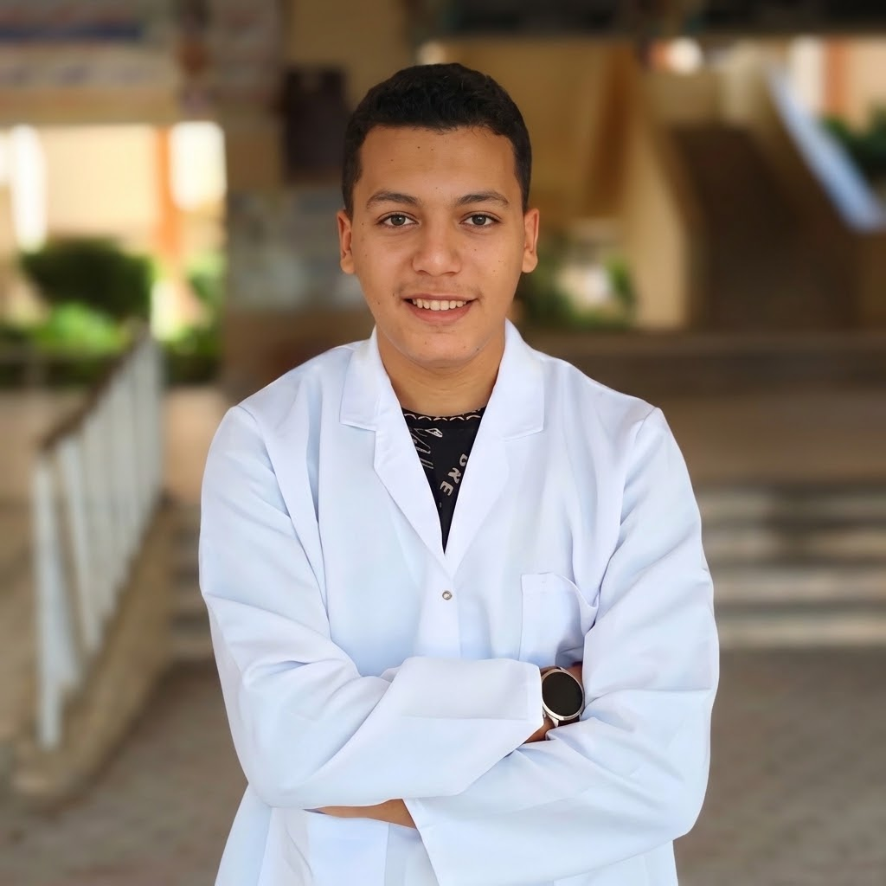

أجمع بين شغف دراسة الطب البشري، وطموح البدايات في عالم التكنولوجيا. أخطو خطواتي الأولى في البرمجة والتصميم الرقمي لدمج الابتكار التقني مع العلوم الطبية.
طالب بالفرقة الأولى (الدفعة 39). أصب تركيزي حالياً على إتقان أسس الفسيولوجيا البشرية وفهم آليات جسم الإنسان لبناء قاعدة طبية صلبة للمستقبل.
بدأت رحلتي مؤخراً في تعلم أساسيات البرمجة، مدفوعاً بفضول كبير لتوظيف أدوات الذكاء الاصطناعي في خدمة الطلاب وتطوير التعليم الطبي.
أحب استكشاف الجانب الإبداعي عبر أدوات التصميم. تشرفت بتصميم الشعار الرسمي لدفعتي (الدفعة 39)، وأسعى دائماً لتحسين حسي البصري.
سواء كنت تريد التعاون في مبادرة جامعية، تبادل الأفكار التقنية، أو مجرد إلقاء التحية.. سأسعد جداً برسالتك!